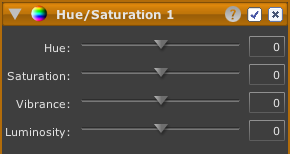

Ajuster la Teinte/Saturation

L'outil Teinte/Saturation vous permet de faire des ajustements de couleur de la teinte, de la saturation ou de la vibrance. Tous les ajustements sont relatifs.
- Teinte : La couleur des pixels.
- Saturation : La vivacité de toutes les couleurs.
- Vibrance : La vivacité des couleurs primaires.
Le contrôle de Vibrance est préférable à celui de Saturation lorsque vous souhaitez ajuster la saturation uniquement des feuillages, du ciel, de l'eau, de vếtements, de maquillage (des éléments qui contiennent des rouges, des verts et des bleus), mais laisser les tons chairs et terres globalement intacts.
Par exemple, coperez la photo ci-dessous.
Pour (b), la vibrance a été augmentée de 50 rendant le maquillage plus vif, mais épargnant pour l'essentiel les cheveux et l'arrière plan. Pour (c), la saturation a été augmentée de 50 et au contraire crée des couleurs artificiellement vives sur toute la photo.
Pour ajuster la Teinte/Saturation de votre photo :

-
Cliquez le bouton de l'outil Teinte/Saturation dans la barre d'outil. (Un nouvel outil Teinte/Saturation apparaîtra en haut de la chaîne de développement.)
-
Utilisez les contrôles pour faire des ajustements :

-
Le contrôle de Teinte ajuste en tournant la roue chromatique.
-
Le contrôle de Saturation ajuste les valeurs de toutes les couleurs selon le rayon de la roue chromatique, du centre vers le bord.
-
Le contrôle de Vibrance ajuste les valeurs selon le rayon de la roue chromatique, du centre vers le bord, mais cette fois, uniquement pour les couleurs primaires de rouge, vert et bleu.
-
Optionnellement :